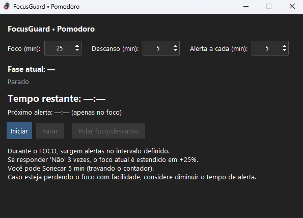
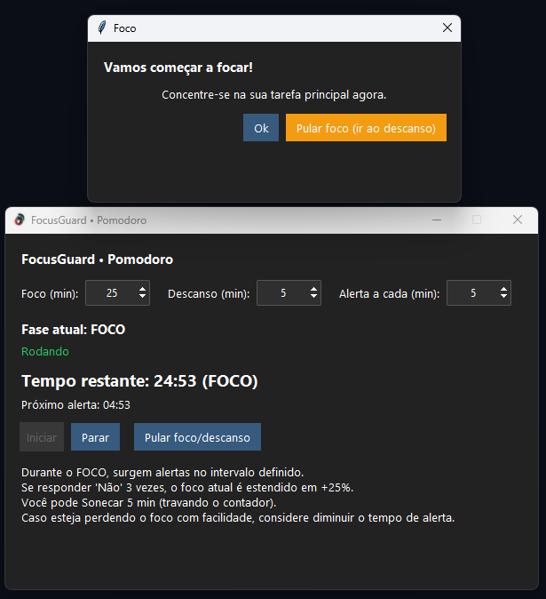
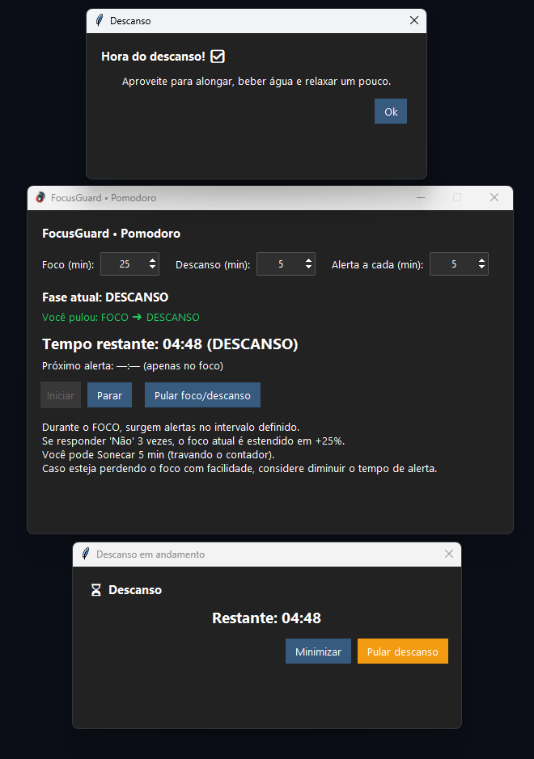

FocusGuard
Timer Pomodoro para Windows com um diferencial: ele não confia que você está focado só porque o contador está rodando. Durante o ciclo de foco, o app pergunta periodicamente se você ainda está na tarefa — e se você admitir que se distraiu três vezes, o foco é estendido em 25% como penalidade.
01Sobre o projeto
Pomodoro comum tem uma falha óbvia: o contador roda igual, esteja você trabalhando ou rolando o feed. O FocusGuard ataca exatamente isso com uma verificação ativa — alertas em intervalo configurável durante a fase de foco.
A mecânica de penalidade é o núcleo do app: responder “Não” três vezes no mesmo ciclo estende o foco em 25%. Não é castigo, é um sinal — se está acontecendo com frequência, a dica na própria tela sugere diminuir o tempo de alerta em vez de insistir num ciclo longo demais para o seu momento.
Construído em Python com Tkinter, sem dependência pesada e sem instalação complicada — abre e usa. Distribuído no Itch.io.
02O que o app faz
-
Ciclos configuráveis
Tempo de foco, de descanso e de alerta ajustáveis antes de iniciar.
-
Verificação ativa de foco
Durante o foco, o app pergunta em intervalos se você ainda está na tarefa.
-
Penalidade adaptativa
Três respostas “Não” no mesmo ciclo estendem o foco em 25%.
-
Soneca de 5 minutos
Trava o contador temporariamente, para quando a interrupção é legítima.
-
Pular fase
Botão para ir direto do foco ao descanso (ou o contrário) quando a rotina muda.
-
Janela de descanso
Aviso dedicado no intervalo, com opção de minimizar ou pular o descanso.
03Capturas de tela
Registros da interface — preservados aqui mesmo que o sistema saia do ar.


